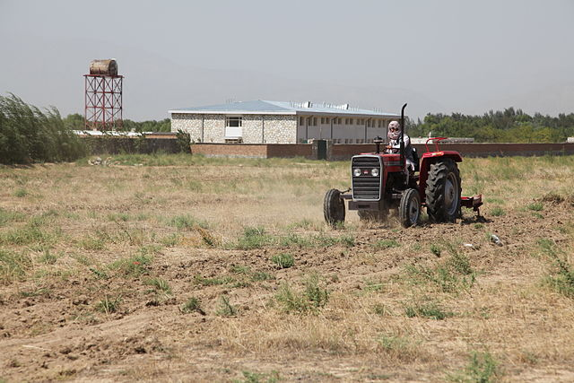

Heartbeat
Motivation
This pattern can help project participants stay in touch, and stay motivated.
Context
A number of people have a shared interest, and have connected with each other about it. However, they are not going to spend 24 hours a day, 7 days a week working together, either because they are busy with other things, or because working separately on some tasks is vastly more efficient.
Forces
Differentiation: the time we spend together isn’t all equally meaningful.
Entropy: something needs to hold the project together, or it will fall apart.
Problem
How will the effort be sustained and coordinated sufficiently? How do we know this an active collaboration, and not just a bunch of people milling about? Is there a there, there?
Solution
People seem to naturally gravitate to something with a pulse. Once a day (stand-ups), once a week (meetings), or once a year (conferences, festivals) are common variants. When the project is populated by more than just a few people, it’s likely that there will be several Heartbeats, building a sophisticated polyrhythm. A well-running project will feel “like an improvisational jazz ensemble” [1]. Much as the band director may gesture to specific players to invite them to solo or sync up, a project facilitator may craft individual emails to ask someone to lead an activity or invite them to re-engage. Two common rhythm components are weekly synchronous meetings with an open agenda, combined with ad hoc meetings for focused work on A specific project. The precise details will depend on the degree of integration required by the group.
Rationale
The project’s heartbeat is what sustains it. Just as people matter more than code [2], so does the life of the working group matter more than mechanics of the work structure. Indeed, there is an quick way to do a reality check and find the project’s strongest pulse: the activities that sustain a healthy project should sustain us, too (cf. Carrying capacity).
Resolution
Noticing when a new Heartbeat is beginning to emerge is a way to be aware of the shifting priorities in the group, and contributes to further differentiation. This may ultimately be a good source of new patterns. On the other hand, if a specific activity is no longer sustaining the project, stop doing it, much as you would move an out-of-date pattern to the Scrapbook in order to make room for other concerns. The power of the Heartbeat is that the project can be as focused and intensive as it needs to be, working against entropy in the ways that start to be required as time goes by.
Example 1
The yearly in-person gathering, Wikimania, is the most visible example of a Heartbeat for the Wikimedia movement.1 may run additional in-person get-togethers.2 Also of note is the twice-yearly call for proposals for individual engagement grants.3 other shorter cycles. Each day a highly-vetted Featured Article appears on the front page of Wikipedia, and is circulated to a special-purpose mailing list.4,5,6 articles for deletion lasts at least seven days.7

University Farm: al-Biruni University, Kapisa province, Afghanistan.
Example 2
Although it may sound quaint, some variant of the University Farm could help to physically sustain peeragogues, while putting the project’s Heartbeat in tune with that of the seasons. In the current distributed mode, we tend our window boxes and allotment gardens. New developments should unfold in a logical order growing out of the needs of the community [3].
What’s Next in the Peeragogy Project
Actual meeting times to be added
Identifying and fostering new Heartbeats and new working groups can help make the community more robust. This is the time dimension of spin-off projects described in Reduce, reuse, recycle.
References
-
David M. Dikel, David Kane, and James R. Wilson. 2001. Software architecture: Organizational principles and patterns. Pearson Education.
-
Linus Torvalds and Steven Vaughan-Nichols. 2011. Linus Torvalds’s Lessons on Software Development Management. Input Output. Retrieved from http://web.archive.org/web/20131021211847/http://h30565.www3.hp.com/t5/Feature-Articles/Linus-Torvalds-s-Lessons-on-Software-Development-Management/ba-p/440
-
Booker T Washington. 1901. Up from slavery. Doubleday & Company, Inc.